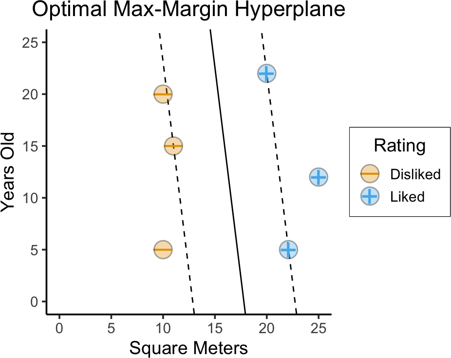

Code
source("../dsan-globals/_globals.r")
set.seed(5300)DSAN 5300: Statistical Learning
Spring 2025, Georgetown University
Today’s Planned Schedule:
| Start | End | Topic | |
|---|---|---|---|
| Lecture | 6:30pm | 7:00pm | Separating Hyperplanes → |
| 7:00pm | 7:20pm | Max-Margin Classifier → | |
| 7:20pm | 8:00pm | Support Vector Classifiers → | |
| Break! | 8:00pm | 8:10pm | |
| 8:10pm | 9:00pm | Support Vector Machines → |
source("../dsan-globals/_globals.r")
set.seed(5300)\[ \DeclareMathOperator*{\argmax}{argmax} \DeclareMathOperator*{\argmin}{argmin} \newcommand{\bigexp}[1]{\exp\mkern-4mu\left[ #1 \right]} \newcommand{\bigexpect}[1]{\mathbb{E}\mkern-4mu \left[ #1 \right]} \newcommand{\definedas}{\overset{\small\text{def}}{=}} \newcommand{\definedalign}{\overset{\phantom{\text{defn}}}{=}} \newcommand{\eqeventual}{\overset{\text{eventually}}{=}} \newcommand{\Err}{\text{Err}} \newcommand{\expect}[1]{\mathbb{E}[#1]} \newcommand{\expectsq}[1]{\mathbb{E}^2[#1]} \newcommand{\fw}[1]{\texttt{#1}} \newcommand{\given}{\mid} \newcommand{\green}[1]{\color{green}{#1}} \newcommand{\heads}{\outcome{heads}} \newcommand{\iid}{\overset{\text{\small{iid}}}{\sim}} \newcommand{\lik}{\mathcal{L}} \newcommand{\loglik}{\ell} \DeclareMathOperator*{\maximize}{maximize} \DeclareMathOperator*{\minimize}{minimize} \newcommand{\mle}{\textsf{ML}} \newcommand{\nimplies}{\;\not\!\!\!\!\implies} \newcommand{\orange}[1]{\color{orange}{#1}} \newcommand{\outcome}[1]{\textsf{#1}} \newcommand{\param}[1]{{\color{purple} #1}} \newcommand{\pgsamplespace}{\{\green{1},\green{2},\green{3},\purp{4},\purp{5},\purp{6}\}} \newcommand{\prob}[1]{P\left( #1 \right)} \newcommand{\purp}[1]{\color{purple}{#1}} \newcommand{\sign}{\text{Sign}} \newcommand{\spacecap}{\; \cap \;} \newcommand{\spacewedge}{\; \wedge \;} \newcommand{\tails}{\outcome{tails}} \newcommand{\Var}[1]{\text{Var}[#1]} \newcommand{\bigVar}[1]{\text{Var}\mkern-4mu \left[ #1 \right]} \]
library(tidyverse)── Attaching core tidyverse packages ──────────────────────── tidyverse 2.0.0 ──
✔ dplyr 1.1.4 ✔ readr 2.1.5
✔ forcats 1.0.0 ✔ stringr 1.5.1
✔ lubridate 1.9.3 ✔ tibble 3.2.1
✔ purrr 1.0.2 ✔ tidyr 1.3.1
── Conflicts ────────────────────────────────────────── tidyverse_conflicts() ──
✖ dplyr::filter() masks stats::filter()
✖ dplyr::lag() masks stats::lag()
ℹ Use the conflicted package (<http://conflicted.r-lib.org/>) to force all conflicts to become errorshouse_df <- tibble::tribble(
~sqm, ~yrs, ~Rating,
10, 5, "Disliked",
10, 20, "Disliked",
20, 22, "Liked",
25, 12, "Liked",
11, 15, "Disliked",
22.1, 5, "Liked"
) |> mutate(
label = ifelse(Rating == "Liked", 1, -1)
)
base_plot <- house_df |> ggplot(aes(x=sqm, y=yrs)) +
labs(
title = "Jeff's House Search",
x = "Square Meters",
y = "Years Old"
) +
expand_limits(x=c(0,25), y=c(0,25)) +
coord_equal() +
# 45 is minus sign, 95 is em-dash
scale_shape_manual(values=c(95, 43)) +
theme_dsan(base_size=14)
base_plot +
geom_point(
aes(color=Rating, shape=Rating), size=g_pointsize * 0.9,
stroke=6
) +
geom_point(aes(fill=Rating), color='black', shape=21, size=6, stroke=0.75, alpha=0.333)
set.seed(5300)
is_separating <- function(beta_vec) {
beta_str <- paste0(beta_vec, collapse=",")
# print(paste0("is_separating: ",beta_str))
margins <- c()
for (i in 1:nrow(house_df)) {
cur_data <- house_df[i,]
# print(cur_data)
linear_comb <- beta_vec[1] + beta_vec[2] * cur_data$sqm + beta_vec[3] * cur_data$yrs
cur_margin <- cur_data$label * linear_comb
# print(cur_margin)
margins <- c(margins, cur_margin)
}
#print(margins)
return(all(margins > 0) | all(margins < 0))
}
cust_rand_lines_df <- tribble(
~b0, ~b1, ~b2,
# 41, -0.025, -1,
165, -8, -1,
-980, 62, -1
) |> mutate(
slope=-(b1/b2),
intercept=-(b0/b2)
)
num_lines <- 20
rand_b0 <- runif(num_lines, min=-40, max=40)
rand_b1 <- runif(num_lines, min=-2, max=2)
# rand_b2 <- -1 + 2*rbernoulli(num_lines)
rand_b2 <- -1
rand_lines_df <- tibble::tibble(
id=1:num_lines,
b0=rand_b0,
b1=rand_b1,
b2=rand_b2
) |> mutate(
slope=-(b1/b2),
intercept=-(b0/b2)
)
rand_lines_df <- bind_rows(rand_lines_df, cust_rand_lines_df)
# Old school for loop
for (i in 1:nrow(rand_lines_df)) {
cur_line <- rand_lines_df[i,]
cur_beta_vec <- c(cur_line$b0, cur_line$b1, cur_line$b2)
cur_is_sep <- is_separating(cur_beta_vec)
rand_lines_df[i, "is_sep"] <- cur_is_sep
}
base_plot +
geom_abline(
data=rand_lines_df, aes(slope=slope, intercept=intercept), linetype="dashed"
) +
geom_point(
aes(color=Rating, shape=Rating), size=g_pointsize * 0.9,
stroke=6
) +
geom_point(aes(fill=Rating), color='black', shape=21, size=6, stroke=0.75, alpha=0.333) +
labs(
title = paste0("10 Boundary Guesses"),
x = "Square Meters",
y = "Years Old"
)(…Which one is “best”?)
base_plot +
geom_abline(
data=rand_lines_df, aes(slope=slope, intercept=intercept, linetype=is_sep)
) +
geom_abline(
data=rand_lines_df |> filter(is_sep),
aes(slope=slope, intercept=intercept),
linewidth=3, color=cb_palette[4], alpha=0.333
) +
scale_linetype_manual("Separating?", values=c("dotted", "dashed")) +
geom_point(
aes(color=Rating, shape=Rating), size=g_pointsize * 0.9,
stroke=6
) +
geom_point(aes(fill=Rating), color='black', shape=21, size=6, stroke=0.75, alpha=0.333) +
labs(
title = paste0("The Like vs. Dislike Boundary: 10 Guesses"),
x = "Square Meters",
y = "Years Old"
)sep_lines_df <- rand_lines_df |> filter(is_sep) |> mutate(
norm_slope = (-1)/slope
)
cur_line_df <- sep_lines_df |> filter(slope > 0)
# left_line_df
# And make one copy per point
cur_sup_df <- uncount(cur_line_df, nrow(house_df))
cur_sup_df <- bind_cols(cur_sup_df, house_df)
cur_sup_df <- cur_sup_df |> mutate(
norm_intercept = yrs - norm_slope * sqm,
margin_intercept = yrs - slope * sqm,
margin_intercept_gap = intercept - margin_intercept,
margin_intercept_inv = intercept + margin_intercept_gap,
norm_cross_x = -(norm_intercept - intercept) / (norm_slope - slope),
x_gap = norm_cross_x - sqm,
norm_cross_y = yrs + x_gap * norm_slope,
vec_margin = label * (b0 + b1 * sqm + b2 * yrs),
is_sv = vec_margin <= 240
)
base_plot +
geom_abline(
data=cur_line_df, aes(slope=slope, intercept=intercept), linetype="solid"
) +
geom_abline(
data=cur_sup_df |> filter(is_sv),
aes(
slope=slope,
intercept=margin_intercept
),
linetype="dashed"
) +
geom_abline(
data=cur_sup_df |> filter(is_sv),
aes(
slope=slope,
intercept=margin_intercept_inv
),
linetype="dashed"
) +
geom_segment(
data=cur_sup_df |> filter(is_sv),
aes(x=sqm, y=yrs, xend=norm_cross_x, yend=norm_cross_y),
color=cb_palette[4], linewidth=3
) +
geom_segment(
data=cur_sup_df,
aes(x=sqm, y=yrs, xend=norm_cross_x, yend=norm_cross_y, linetype=is_sv)
) +
geom_point(
aes(color=Rating, shape=Rating), size=g_pointsize * 0.9,
stroke=6
) +
geom_point(aes(fill=Rating), color='black', shape=21, size=6, stroke=0.75, alpha=0.333) +
scale_linetype_manual("Support\nVector?", values=c("dotted", "solid")) +
labs(
title = paste0("Left Hyperplane Distances"),
x = "Square Meters",
y = "Years Old"
)# New calculation: line with same slope but that hits the SV
# y - y1 = m(x - x1), so...
# y - yrs = m(x - sqm) <=> y = m(x-sqm) + yrs <=> y = mx - m*sqm + yrs
# <=> b = yrs - -m*sqm
cur_line_df <- sep_lines_df |> filter(slope < 0)
# left_line_df
# And make one copy per point
cur_sup_df <- uncount(cur_line_df, nrow(house_df))
cur_sup_df <- bind_cols(cur_sup_df, house_df)
cur_sup_df <- cur_sup_df |> mutate(
norm_intercept = yrs - norm_slope * sqm,
margin_intercept = yrs - slope * sqm,
margin_intercept_gap = intercept - margin_intercept,
margin_intercept_inv = intercept + margin_intercept_gap,
norm_cross_x = -(norm_intercept - intercept) / (norm_slope - slope),
x_gap = norm_cross_x - sqm,
norm_cross_y = yrs + x_gap * norm_slope,
vec_margin = abs(label * (b0 + b1 * sqm + b2 * yrs)),
is_sv = vec_margin <= 25
)
base_plot +
geom_abline(
data=cur_line_df, aes(slope=slope, intercept=intercept), linetype="solid"
) +
geom_abline(
data=cur_sup_df |> filter(is_sv),
aes(
slope=slope,
intercept=margin_intercept
),
linetype="dashed"
) +
geom_abline(
data=cur_sup_df |> filter(is_sv),
aes(
slope=slope,
intercept=margin_intercept_inv
),
linetype="dashed"
) +
# geom_abline(
# data=cur_line_df,
# aes(slope=slope, intercept=intercept),
# linewidth=3, color=cb_palette[4], alpha=0.333
# ) +
geom_segment(
data=cur_sup_df |> filter(vec_margin <= 18),
aes(x=sqm, y=yrs, xend=norm_cross_x, yend=norm_cross_y),
color=cb_palette[4], linewidth=3
) +
geom_segment(
data=cur_sup_df,
aes(x=sqm, y=yrs, xend=norm_cross_x, yend=norm_cross_y, linetype=is_sv)
) +
geom_point(
aes(color=Rating, shape=Rating), size=g_pointsize * 0.9,
stroke=6
) +
geom_point(aes(fill=Rating), color='black', shape=21, size=6, stroke=0.75, alpha=0.333) +
scale_linetype_manual("Support\nVector?", values=c("dotted", "solid")) +
labs(
title = paste0("Right Hyperplane Margin"),
x = "Square Meters",
y = "Years Old"
)\[ \begin{align*} \text{maximize } & M \\ \text{s.t. } & y_i(\beta_0 + \beta_1x_i) > 0 \end{align*} \]
library(e1071)
liked <- as.factor(house_df$Rating == "Liked")
cent_df <- house_df
cent_df$sqm <- scale(cent_df$sqm)
cent_df$yrs <- scale(cent_df$yrs)
svm_model <- svm(liked ~ sqm + yrs, data=cent_df, kernel="linear")
cf <- coef(svm_model)
sep_intercept <- -cf[1] / cf[3]
sep_slope <- -cf[2] / cf[3]
cent_df |> ggplot(aes(x=sqm, y=yrs)) +
coord_equal() +
scale_shape_manual(values=c(95, 43)) +
theme_dsan(base_size=14) +
geom_abline(
intercept=sep_intercept, slope=sep_slope, linetype="solid"
) +
# geom_abline(
# data=cur_line_df,
# aes(slope=slope, intercept=intercept),
# linewidth=3, color=cb_palette[4], alpha=0.333
# ) +
geom_point(
aes(color=Rating, shape=Rating), size=g_pointsize * 0.9,
stroke=6
) +
geom_point(aes(fill=Rating), color='black', shape=21, size=6, stroke=0.75, alpha=0.333) +
scale_linetype_manual("Support\nVector?", values=c("dotted", "solid")) +
labs(
title = "Optimal Max-Margin Hyperplane",
x = "Z(Square Meters)",
y = "Z(Years Old)"
)